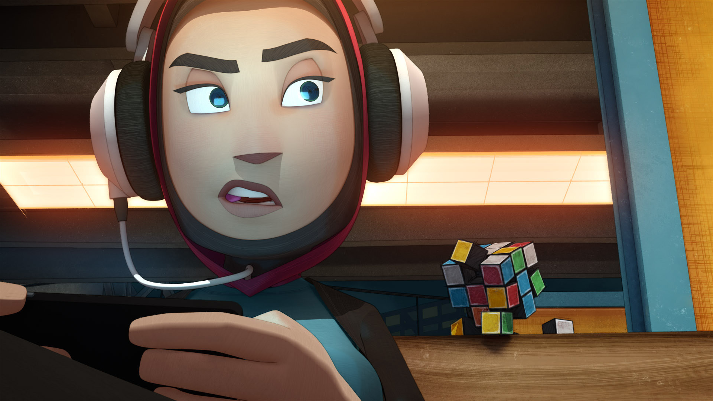
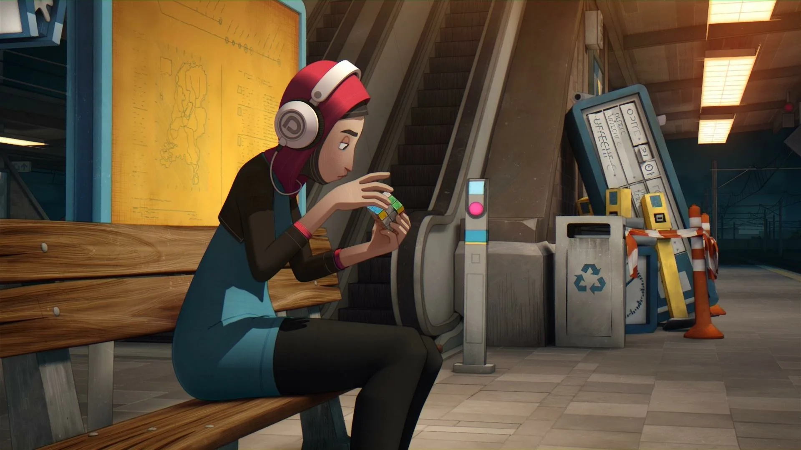
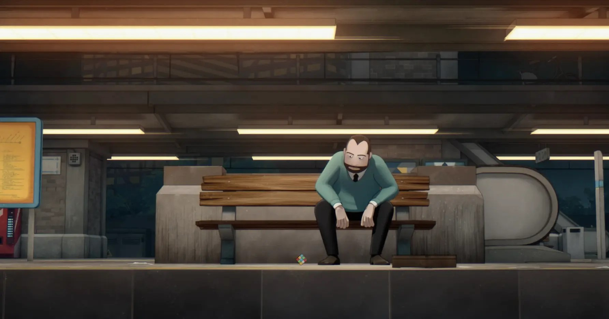

Эсра
«Скучно. Следующий уровень. Свайп».
Представитель поколения Z. Привыкла к быстрому дофамину от мобильных игр. Кубик Рубика для неё — пережиток прошлого.
Polder Animation · 2017 · 6 минут
«Иногда, чтобы собрать себя, нужно перестать нажимать на экран».
Всего 6 минут, чтобы понять: не всё в этом мире решается свайпом.
19-летняя Эсра опаздывает на поезд. Чтобы скоротать время в ожидании, она достаёт телефон и погружается в яркую, шумную мобильную игру.
Но её спокойствие нарушает... одушевлённый кубик Рубика. Он выбирается из кучи старого хлама на перроне и сам подкатывается к ней. Эсра раздражена: кубик требует времени, терпения и усидчивости, а она привыкла к мгновенному результату на экране.
Это история о конфликте поколений, цифровой зависимости и о том, что старые добрые головоломки всё ещё могут нас чему-то научить.

Нажмите на любую грань, чтобы увидеть, как менялось отношение Эсры к кубику.
Каждый поворот кубика — это шаг к пониманию.

«Скучно. Следующий уровень. Свайп».
Представитель поколения Z. Привыкла к быстрому дофамину от мобильных игр. Кубик Рубика для неё — пережиток прошлого.

«Опоздал. Всё рухнуло. Ненавижу этот день».
Он появляется в самом финале. Так же, как и Эсра, он не успел на поезд. В приступе гнева он швыряет портфель, разбрасывая бумаги. И именно в этот момент к нему подкатывается... кубик.
Режиссер Бастиан Шравендеел построил фильм на контрасте:
Главная мысль: мы настолько привыкли к быстрым победам на экране, что разучились получать удовольствие от процесса. Собрать кубик Рубика — значит обрести терпение и научиться справляться с фрустрацией.
Эсра собирает кубик. Но он не оживает. На перроне появляется поезд. Эсра садится в вагон и оглядывается, надеясь, что кубик всё-таки оживёт. Но он остаётся неподвижным на скамейке.
Тут на перрон выбегает мужчина. Он тоже опоздал. В приступе ярости он швыряет портфель на землю — рабочие листы разлетаются в разные стороны. Он падает на скамейку, сгорбившись от бессилия. И вдруг замечает рядом с собой... кубик Рубика. Собранный. Идеальный.
Пока кубик добирался до него, он снова рассыпался. И теперь он перемешан — как и мысли мужчины. Кубик смотрит на него, ожидая. Готов ли он начать сначала?
На этом фильм заканчивается. Это открытый финал: урок терпения передаётся дальше — от того, кто справился, к тому, кто ещё борется.